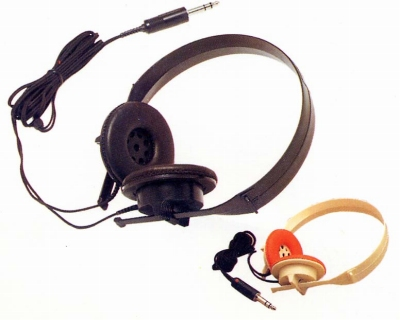
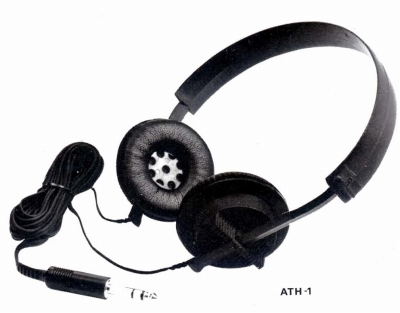

ATH-1


■価格 4,000円
■型式 プラナー・ダイナミック平面駆動型
■振動板
■インピーダンス
■再生周波数帯域 20-20,000Hz
■許容入力 1,000mW（1分間連続）
■感度 93dB/mW at1kHz
■コード 3.5ｍローノイズＹ形ソフトコード
■重量 190g（コード含む）/145g（コード含まず）
■発売 1978年頃
■販売終了 1981年頃
■備考
ブラックモデルのほか、ホワイトモデル（イヤパッドはオレンジ又はブルー）あり
なおスペックは1977/12月版カタログのもの、1980/10月版では感度
98dB/mW、コード長2.5mとなっている。